{kind=link}
{kind=link}
{kind=link}
{kind=link}
{kind=link}
{kind=link}
{kind=link}
{kind=link}
{kind=link}
{kind=link}
{kind=link}
{kind=link}
{kind=link}
{kind=link}
{kind=link}
{kind=link}
{kind=link}
{kind=link}
Architectural Diagram
The diagram below demonstrates how our system is interconnected to form the final product.

Over the course of COMP204P, we have spent time understanding all the aspects of the web app so we knew exactly what was required. In doing so, we have produced three initial prototypes for the user interface based on our own interpretations of the requirements and user needs.
After producing the three proposed user interface designs, user evaluations were performed on each of them to identify potential issues and strong points. This then proved useful as we were able to merge the ideas into a single, final prototype for the UI.
Target users:
Skilled hospital workers. It is expected they shall be competent in using computers and new technology. Examples include Doctors and medical machine operators. The application will most likely only be used in hospitals or where the MRI brain scan has taken place.
Potential problems:
The three initial prototypes are shown below (click to enlarge images):
Prototype 1
| 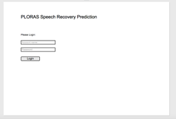 | 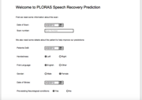 | 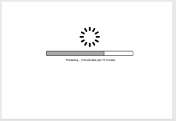 | 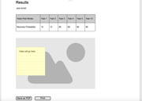 |
For this prototype we have seen the design is very simple which makes it easy to follow the instructions for each step. However, there are some clear issues that would make the prototype not very user friendly. Although the navigation going through each step is fine, there needs to be a way of going backwards. There should also be some chance of multitasking by allowing multiple scans to be processed at the same time as well as saving the results online.
Prototype 2
| 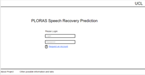 | 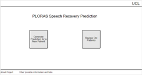 | 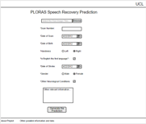 | 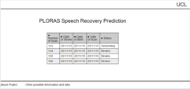 | 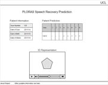 |
This prototype contains the ideal pages for the website. The page that allows the user to view an overview of all their scans is a very useful feature. However, it could be very tedious for a user to request multiple scans when each one requires large amounts of compulsory data to be filled in. There should also be an option to print out or save the data locally.
Prototype 3
| 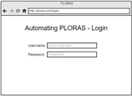 | 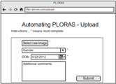 | 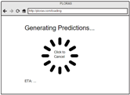 | 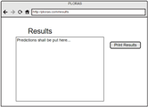 |
This prototype is similar to the first one with a very simple user interface and very little ambiguity. It has sections for compulsory and optional data which could prove useful for a scan with limited data. However, it is only possible to carry out one prediction at a time with no chance to save the data locally. This means it wouldn't be very practical in practice.
After carefully comparing our three prototypes with our HCI knowledge gained and evaluating each of them individually, we came up with a final design. We decided to use Prototype 2 as our base due the use of the UCL Indigo theme and the overview page. To make sure our final design met all the user and client needs, we went through each requirement individually to ensure they were accounted for.
From our Must Have and Should Have requirements, all of these tasks have been fulfilled. This is because all the key features are able to be carried out by the user. The user can log in and upload a scan which is then processed on the server side. The results are then returned to the user in a easy to understand format. The user's scans are saved on the server and can also be saved locally.
| 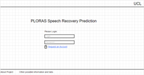 | 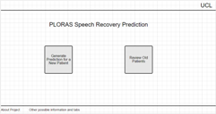 | 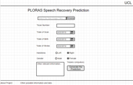 | 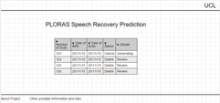 | 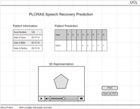 |
The final design contains no unnecessary features and is very easy to use due to taking into account software bloat consequences. With usability being a primary goal for the application we made adjustments for each of the negative issues discussed previously in the Prototypes section. This meant little problems that affect the user's experience like being able to cancel a scan were accounted for.
Brain Scan Processing
Over the course of the first term, we have completed the scripting of automating several processes with regards to the brain scans. When a user sends the scans shown in the above user interface, what they are sending are the raw images of the brain produced from the fMRI scan. These then need to be converted into a usable format. After this there needs to be a generation of a spreadsheet which indicates percentage damage of specified brain regions that are then compared with previous brain scans in a database. There are several more steps which we plan to go over and complete in the second half of this project. This would then result in the completion of the back-end of our application where the predictions for brain scans are generated automatically. The tasks we have already completed are described below:
This procedure consisted of processing a number of raw images from an fMRI brain scan into a usable, normalised overview with damaged regions indicated. For this task, the clients already had a system in place for completing the procedure. However it consisted of a large number of tedious steps which took place in MATLAB through SPM. This procedure took upwards of 20 minutes for each patient's scan. We have managed to automate these processes through scripts written in MATLAB that can now complete the task in around five minutes, depending on the processor speed.
For the automatic generation of the spreadsheet, we received a GUI version of a program created for this procedure from our clients. We came to a conclusion that it was pointless to reinvent the wheel and we came up with a way of calling call-back functions of the buttons with externally provided parameters such as patients' brain scans, output file location, among others. In order to access the GUI itself from an external script we had to change a few parameters of the interface, so that its handles would be visible externally. Then we had to analyse the code and find exactly which handles were required for this procedure and which values they should have. After doing so we proceeded with our script that is eventually going to be the part of the final application.
Our code for the above processes can be found in our GitHub repository. It includes the scripts we produced as well as the code our clients gave us to use for our tasks.
Build Automation
Due to the fact we will be deploying to a server, we have some experience due to our first scenario week. In terms of configuring the server for use, we will have to wait for the client to confirm what operating system they want to use. If it is Linux based then a bash script can be used to automate installation of all of the necessary dependencies through the relevant package manager.
The next stage is setting up Git with a bash script which is is as simple as using a make directory command to create a directory in the correct place. Then we shall be using Git clone to clone the repository. A small amount of server configuration will probably be needed too.
In order to automate updates to the software, we can script in Git Hooks, which automatically detects if any commits have been pushed up to the repository. This thus links the hook to a Git pull command which means that the files are then updated automatically on the server.
Through our research and knowledge gained through COMP204P, we have a strong understanding of our plans for the second term. There are two major parts to the solution for our initial problem statement. We shall build a front-end and back-end for our application.
Front-End
For the front-end, we have decided to build our application as a website so that it is accessible to any computer that has a web browser without the need to install anything extra. The web app shall be built in HTML and with the use of an additional framework, Django. Multiple prototypes were built with a final design agreed upon which means we simply need to program our chosen design. All the features have also been agreed upon in our MoSCoW style requirements, with an emphasis being placed on ease of access.
Back-End
For the back-end, the primary aim is to ensure everything is automated such that no manual adjustments are needed for a prediction to be made. There are various processes that the raw images from the fMRI scan need to go through. Some of these processes occur in MATLAB with some automation already completed by scripts also written in MATLAB. This decision has proved advantageous as it is possible to integrate the MATLAB scripts with the Django framework without much difficulty.
Potential Future Plans
There are some goals which are not expected to be met during the course of the project but could prove useful to add in the future. These are:
During the initial stages of the development of the application we have recognised the importance of testing individual parts of the code. Processing patients’ brain scans take multiple steps and even if one of them fails, the whole result is going to be wrong. This could possibly lead to some dangerous consequences for the patient such as getting unnecessary treatment. Therefore each produced part of the code is tested whenever a change is performed.
The testing for the two main elements of our program will have an obvious split. For the front end we will be using a combination of HTML and CSS, with Django as a framework, which will be making calls to the back end. These will be into MATLAB and also for integrating with the existing PLORAS database held in SQL format. As we can see there is a lot of integration between different languages and frameworks so it makes sense to test functionality of each of these in a modular fashion. Although automated testing is ideal, it is an outright fact that a certain of level of human involvement will be required in the testing of the brain scan manipulating scripts ran within MATLAB.
For testing MATLAB scripts, we have used the integrated unit tests. However, they could not be used everywhere and could not be as automated as we would have wished for. This is because the scripts take actual brain scans as inputs that cannot be randomly generated, so our number of possible inputs is limited. Therefore our testing consisted of manually pre-generating with the same method our client used. This was done for all of the required steps using data provided by our client. Then after each code change, a script runs the given step and the produced image is compared to the pre-generated one. If it differs even by the slightest bit, the code would be worked on until the image was right.
With regards to the testing of the database, we will need to output to a test database in order to test our system. This is due to the fact that we aren’t going to have access to the PLORAS live database because of patient confidentiality.
As we will be producing the front end for the server that is going to run the MATLAB scripts, we plan on using Django’s unit tests as in this case we will be able to use some randomised data in order to achieve higher test coverage. This is because Django actually supports automated testing fairly well out of the box. Python from which Django is built upon has a built in unit test module which can be used for this purpose.
One of our key considerations is security due to the data that we’re handling and processing. Therefore we will have to do a lot more web security research and testing. An issue that we know of is JavaScript injection, also known as cross-server scripting. There are no doubt other security considerations that we will need to acknowledge.
By performing all of these tests we aim to achieve:
The diagram below demonstrates how our system is interconnected to form the final product.

While our system has primarily been developed to work with the scanning system in place at BUCNI (Birkbeck-UCL Centre for Neuroimaging), a Siemens Avanto MRI scanner, it is possible for a number of other scanners to produce images that could be processed in a similar way.
The first part to need altering would be the conversion of image slices into a 3-dimensional image; currently our system is checking for a specific format and number of slices as per would be expected from a BUCNI scan. Any collaborating research centres would need to build a pipe that could take their images and convert them to the format required for the proceeding stages. A good point for this would be at the .IMG stage if possible. The process is illustrated with an arrow to show the ideal connector point.
This would require adjustments from our side to allow the IMGs to be uploaded and directly processed from this point. There may also be a requirement for certain parameters to be altered such as the contrast tolerance used for identifying lesions as different intensity scanners would produce different levels of contrast.
An alternative would be to perform self processing independently then submit the scores for the different lesion areas to allow the prediction to still be made for a given patient. This data could also be useful in enhancing the accuracy of future predictions.